1. Quick Start
This is the fastest path from first launch to your first useful diagnosis.
- Open the app and sign in, or continue without signing in.
- Go to Garage and add at least one vehicle.
- Set the vehicle as Active.
- Open Diagnose.
- Enter issue details, add photos, and optionally attach an OBD snapshot.
- Submit and review Likely Causes and Troubleshooting Steps.
Start simple
Even a short symptom description plus 1–2 clear photos can be enough to get a useful first pass.
Best practice
Set the correct active vehicle first so the diagnosis uses the right engine, model, and context.
Improve confidence
Attach OBD data whenever possible to give the app stronger technical signal.
2. Sign In Options
Sign-in controls whether your vehicles and reports can follow you across devices.
- Google: available on all supported platforms.
- Facebook: available on mobile and desktop.
- Apple: available on iOS and macOS.
- Continue without signing in: data stays local on the current device.
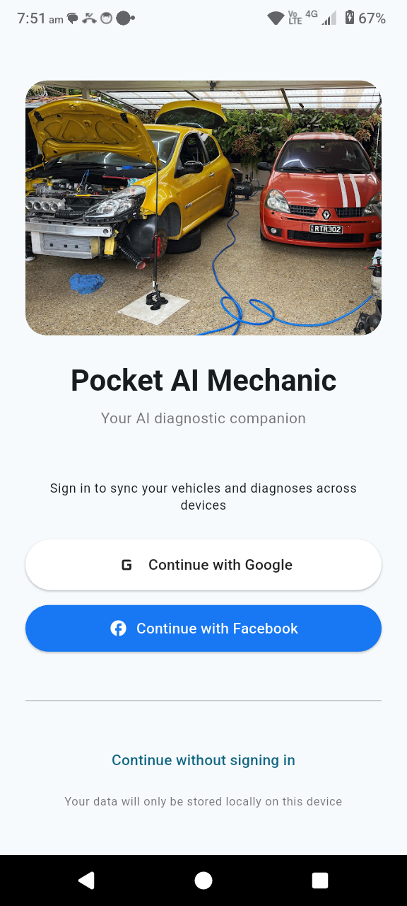
3. Main Navigation
The navigation model is designed to keep the four core flows easy to reach.
- Top bar search icon: opens global search.
- Profile icon: shows account info and logout.
- Bottom navigation: switches between Garage, Diagnose, History, and Settings.

4. Garage
Your Garage is the source of truth for vehicle-specific diagnosis context.
Add and manage vehicles
- Tap Add Vehicle to create a vehicle record.
- Each vehicle can include year, family/model, variant, gearbox, engine, VIN, and optional image.
- Tap Set active on the vehicle you want to diagnose.
- Open a vehicle to edit details, modifications, insurance info, and maintenance records.
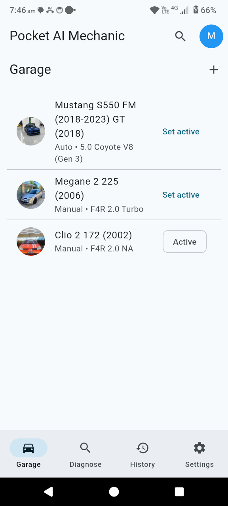
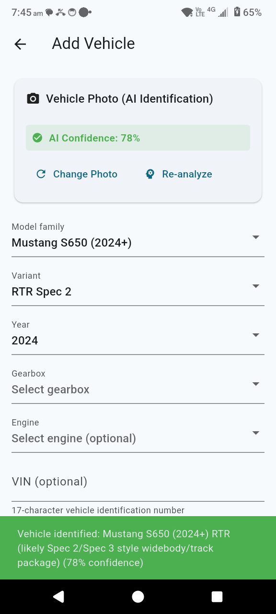
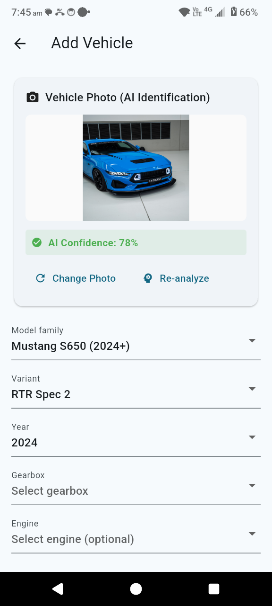
5. Diagnose
This is the heart of the app: describe the issue, add supporting context, and let the engine build a diagnosis.
Create a diagnosis request
- Confirm the active vehicle shown at the top.
- Enter clear issue details in symptom text.
- Add tags for easier history filtering later.
- Add photos using the camera or image picker.
- Optionally run OBD Scan for Diagnosis and attach a snapshot.
- Tap submit to run diagnosis.
Low-signal diagnosis flow
If the app needs more detail, it can ask guided clarifying questions before a final result is refined.
- Answer guided prompts and apply the details back to issue text.
- Resubmit with improved symptom context.
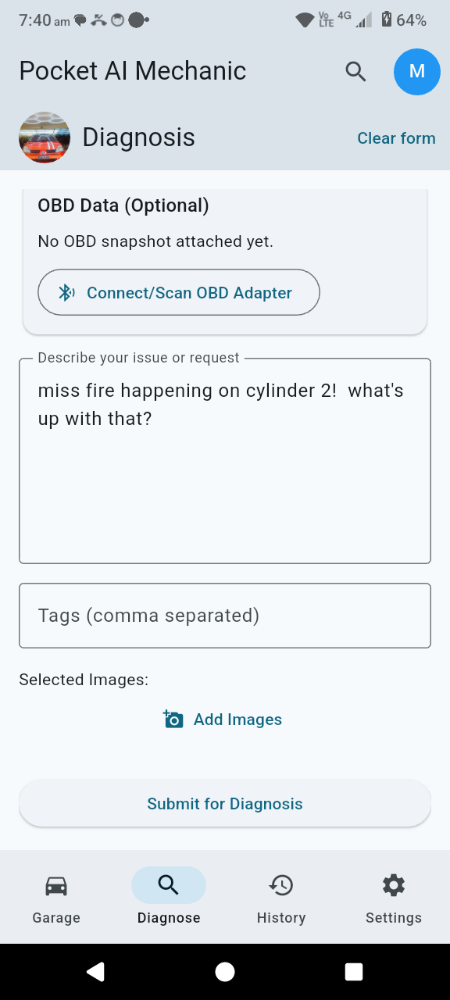
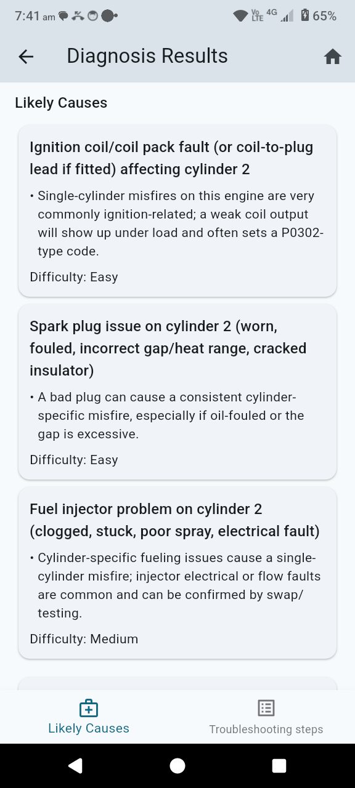
OBD snapshot flow
- Open OBD connect and initialize your adapter.
- Run snapshot to capture VIN, DTCs, and selected live or freeze-frame values.
- Tap Attach to Diagnosis.
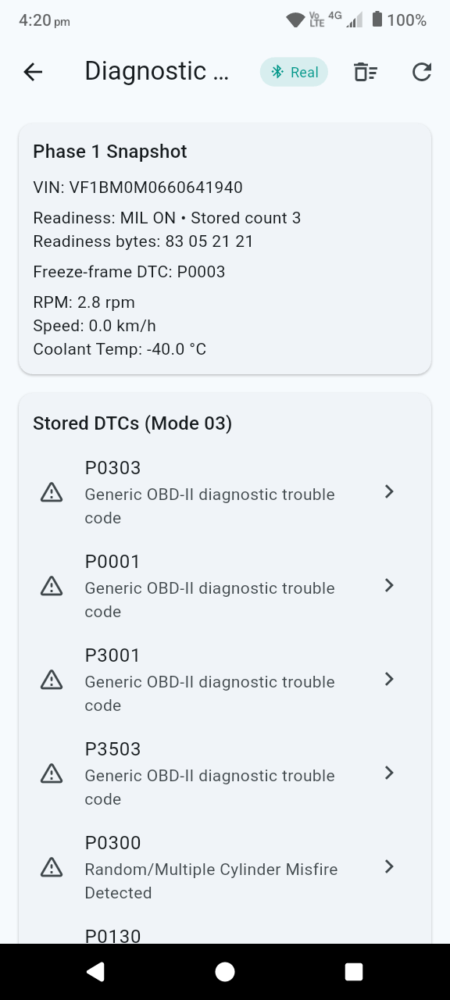
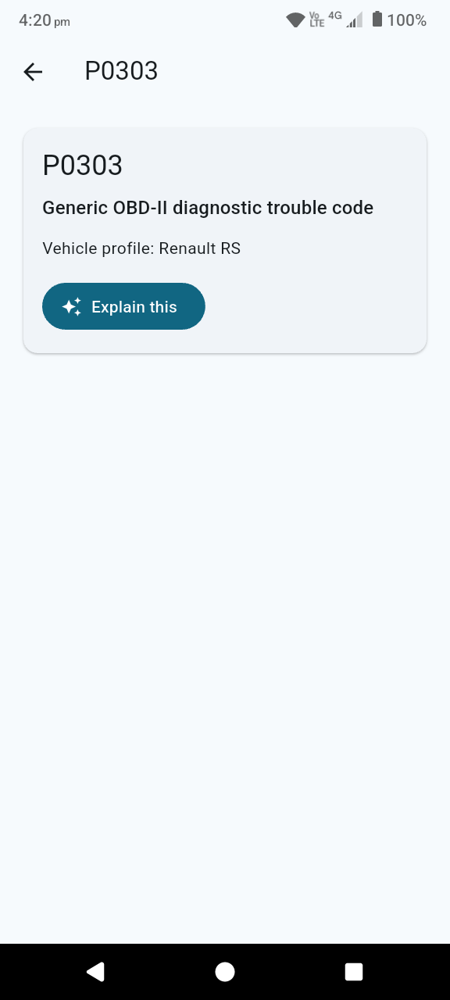
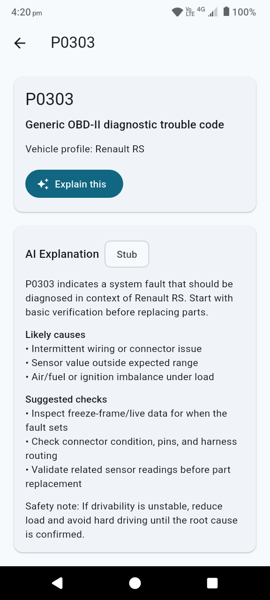
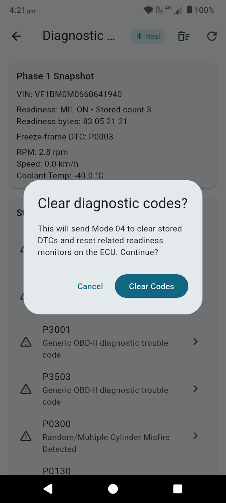
6. Understanding Results
The results view balances ranked conclusions with practical next actions.
The results screen has two tabs:
- Likely Causes: ranked causes with rationale and difficulty.
- Troubleshooting Steps: ordered actions; tap a step for detail.
Context panels you may see
- Safety warning text when relevant.
- OBD context attached / not attached.
- AI analysis status: used, unavailable, or runtime unavailable.
- Need more details: guided prompts for refinement.
Follow-up Q&A
- Use Guided Details chips or text fields, then tap Submit Answers.
- Ask free-form follow-up questions with Ask AI.
- Clear the follow-up conversation from the same card if needed.

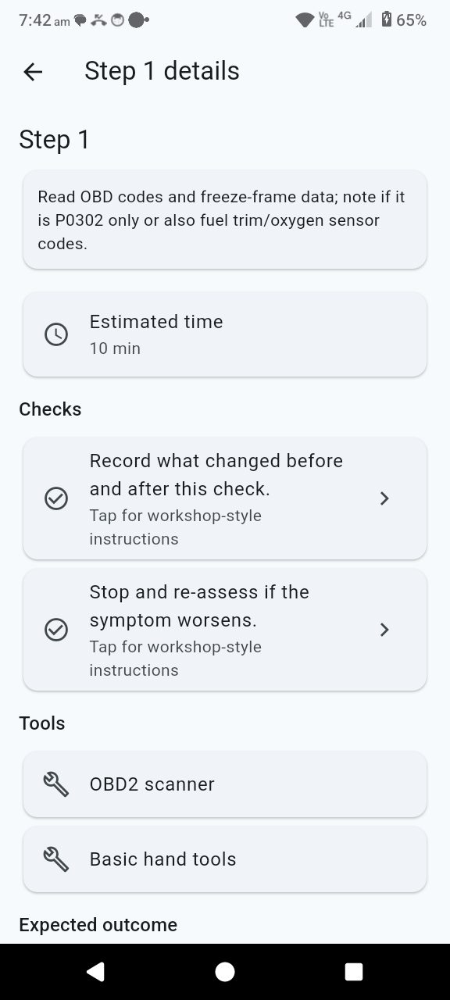
7. History
History is where repeatability and learning start to matter.
- View previous reports by date.
- Search by symptom text or tags.
- Filter by vehicle and sort by date, vehicle, or confidence.
- Open any report to revisit full results.
- Select multiple reports for bulk delete.
- Export visible reports as CSV for copy or reuse.
8. Settings
Settings gives users control over AI, OBD, appearance, and local data management.
OBD
- Open BLE connect flow for real adapter use.
Appearance and preferences
- Theme: System, Light, or Dark.
- Units: Metric or Imperial.
- Notifications: maintenance reminders and alerts.
Data management
- Knowledge Packs: view diagnostic knowledge database.
- Export Data: export vehicles, reports, and settings JSON in-app.
- Import Data: paste exported JSON to restore data.
- Clear Cache: clears local cached settings and data.
9. OBD Tools
Use the OBD tools to connect to your adapter, scan diagnostic trouble codes, review live data, and clear faults after repairs.
Quick start
- Plug your OBD adapter into the vehicle’s OBD port.
- Turn the ignition to ON.
- Open the app and connect to your Bluetooth OBD adapter.
- Run a scan to read stored fault codes and vehicle data.
Read fault codes
- Open the OBD tools area and start a diagnostic scan.
- Review any detected Diagnostic Trouble Codes (DTCs).
- Open a code to see details and related diagnostic context.
- Use the AI-assisted results to review likely causes and recommended checks.
View live data
Use the live data dashboard to monitor values such as engine RPM, coolant temperature, throttle position, and other supported sensor readings in real time.
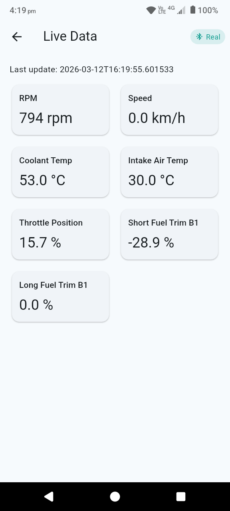
Clear OBD faults
- Only clear codes after repairs or checks have been completed.
- From the fault code view, tap Clear Codes.
- Confirm the action when prompted.
- Run another scan to confirm whether the codes remain cleared.
Supported vehicles
Pocket AI Mechanic has be launched with a very focused vehicle range. Renault Sport models (Clio RS, Megane RS) and Ford Mustang 2015+. Our goal is to continually validate AI findings with real world expert mechanics. The LLM's we use are already challenging even the most experienced expert specialist mechanics and the AI will naturally continue to improve month on month.
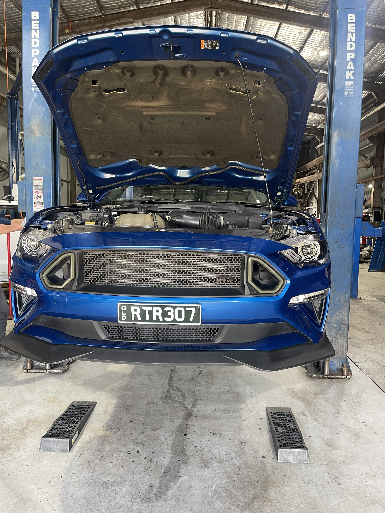
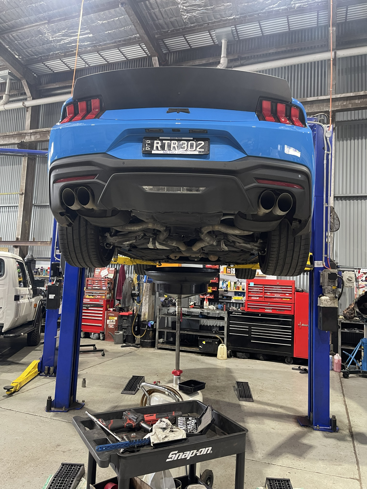
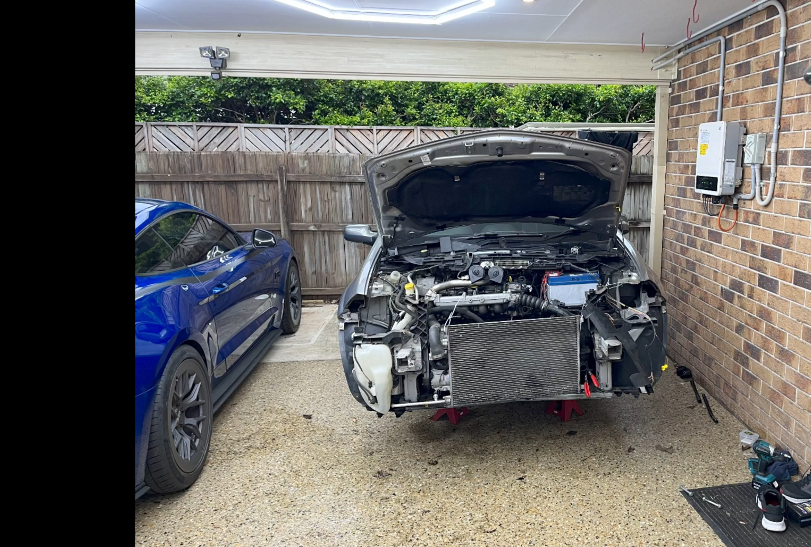

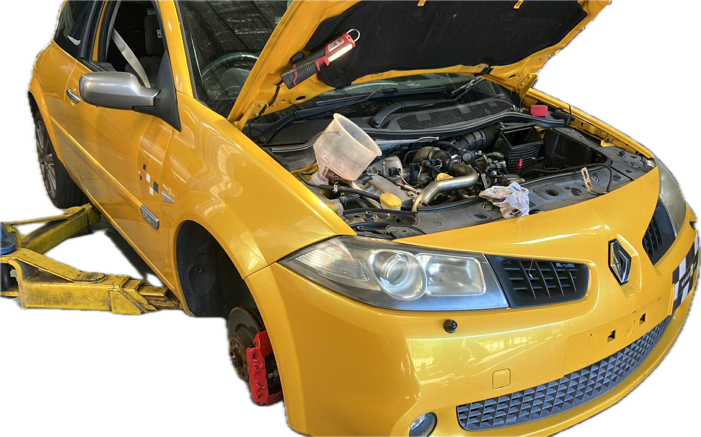
10. Best Results Tips
- Describe when the problem happens: cold start, hot idle, under load, or specific RPM.
- Include recent work performed and any new noises or smells.
- Add clear, well-lit photos from multiple angles.
- Attach an OBD snapshot whenever possible for better diagnostic context.
- Use follow-up questions to narrow uncertain results.
12. Safety and Disclaimer
- Do not drive a vehicle if a fault could compromise braking, steering, or engine safety.
- Follow workshop safety standards and use proper tools and PPE.
- For high-risk or uncertain findings, seek professional inspection.